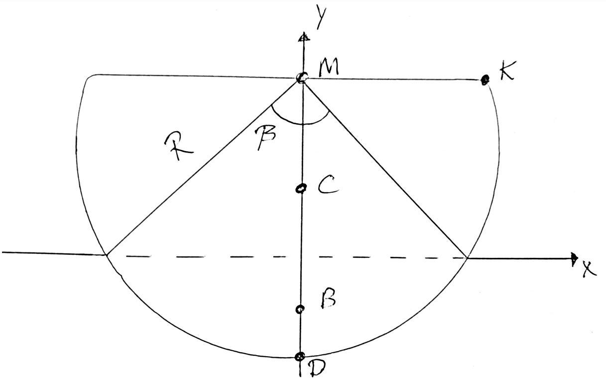
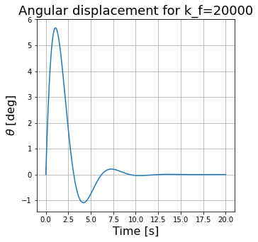
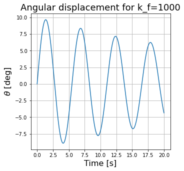
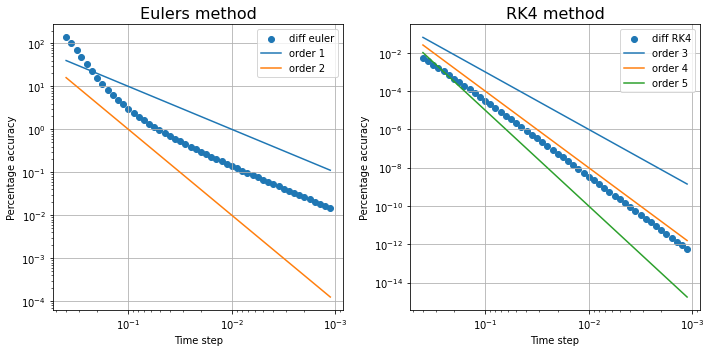

Take a ship with a half-circle hull, put it in water, give it a push and ask: does it come back up, or does it capsize? Then make the model harder, one force at a time, and see what each numerical method makes of it.

How deep does it sit?
The ship is a 2D half-disc with radius \(R = 10\) m and area density \(\sigma = 500\) kg/m², floating in water with \(\sigma_0 = 1000\) kg/m². Archimedes says the submerged area must balance the weight, \(A_0 = \frac{\sigma \pi R^2}{2\sigma_0}\). Geometry says a circular segment with central angle \(\beta\) has area \(\tfrac12R^2(\beta - \sin\beta)\). Setting them equal:
$$\beta - \sin\beta = \pi\,\frac{\sigma}{\sigma_0}.$$There's no closed form, so we solved it with Newton's method: \(\beta = 2.3099\) rad, about 132°. Everything else (the waterline, the depth of the centre of buoyancy) follows from \(\beta\).
Try: make the ship lighter or heavier. Notice: Newton's method finds β in a handful of steps, and the waterline moves with it. At half the density of water (the project's ship), β ≈ 2.31 rad.
Rocking
With only gravity and buoyancy, the buoyant force \(F_B\) acts through the metacentre, a distance \(h = \frac{4R}{3\pi}\) above the centre of mass. Newton's second law for rotation gives
$$I_C\,\frac{d^2\theta}{dt^2} = -F_B\,h\,\sin\theta, \qquad I_C = \tfrac12 m R^2\left(1 - \frac{32}{9\pi^2}\right).$$It's the pendulum equation. For small angles, \(\sin\theta \approx \theta\) gives a harmonic oscillator with an exact solution, which we used as a reference. We compared the two at starting angles of 1° and 20°. The approximation is excellent for small angles; for larger ones the true pendulum swings a little slower, so the two solutions drift apart over time.
Try: increase the starting tilt. Notice: at a few degrees, sin θ ≈ θ is spot on. At large tilts the real ship (orange) swings slower, and the approximation (dashed) drifts ahead.
Building the model up
From there we let the ship move freely, so the state became an 8-dimensional vector:
$$\mathbf w = [\theta,\; \omega,\; y_C,\; v_y,\; x_C,\; v_x,\; s_L,\; v_L],$$with the angle and angular velocity, the centre of mass in two directions, and the cargo's position and velocity along the deck. The forces were added one at a time:
- Buoyancy that changes with depth. As the ship bobs, the submerged area and therefore \(F_B\) change.
- Capsizing. The ship has capsized when any part of the deck goes under water, which happens when \(R\lvert\sin\theta\rvert\) exceeds the height of the metacentre above the waterline. Starting upright, the smallest angular velocity that tips it over is about 24.7° per second.
- Loose cargo. A point mass \(m_L\) on the deck that slides with the tilt, \(\dot v_L = -g\sin\theta\), and pushes back on the ship through a torque \(-m_L g\cos\theta\,s_L\). Without railings it can fall off; with railings it stays on board.
- Friction with the water, acting at the bottom of the hull and proportional to the angular velocity, with coefficient \(k_f\).
- Wind and waves as a periodic force \(F_0\cos(\omega_w t)\).
- Friction between cargo and deck, with coefficient \(\mu\).
The full rotational equation ended up as
$$\frac{d\omega}{dt} = \frac{-F_B h\sin\theta \;-\; m_L g\cos\theta\, s_L \;-\; k_f R\gamma\,\omega\,\big(y_C + R(1 - \cos\tfrac{\gamma}{2})\big) \;+\; F_0\cos(\omega_w t)\,y_C}{I_C}.$$Friction


Three solvers
All of this is an ODE system \(\dot{\mathbf w} = \mathbf f(t, \mathbf w)\), which we solved three ways.
Euler's method takes one slope and steps along it:
$$\mathbf w_{n+1} = \mathbf w_n + \Delta t\,\mathbf f(t_n, \mathbf w_n).$$Runge–Kutta 4 samples four slopes per step and combines them:
$$\mathbf w_{n+1} = \mathbf w_n + \frac{\Delta t}{6}\big(\mathbf k_1 + 2\mathbf k_2 + 2\mathbf k_3 + \mathbf k_4\big).$$Bogacki–Shampine is an adaptive 3(2) pair: two estimates of different order from the same slopes, whose difference estimates the local error and shrinks or grows the step size automatically.

The convergence plot confirms the theory: global error \(\mathcal O(\Delta t)\) for Euler and \(\mathcal O(\Delta t^4)\) for RK4. Halving the step barely helps Euler, but makes RK4 sixteen times more accurate.
When the adaptive solver stalled
With friction between the cargo and the deck, Bogacki–Shampine more or less froze for some values of \(\mu\). Our best guess: the cargo caused sharp spikes in the equations, the error estimate exploded, and the step size shrank towards zero. RK4 handled the same cases without complaint.
To compare the two fairly we ran Bogacki–Shampine with a fixed step. The differences between them mostly came from how they handled the cargo: with lighter cargo or less friction they agreed much better.
Running two solvers on the same problem doesn't tell you which one is right, but the places where they disagree are a good place to look for problems.
Try it yourself
The core of it, live: the same frictionless ship simulated twice. In reality it should rock forever with the same amplitude. Euler slowly pumps energy in until it tips over; RK4 stays put. Make the step size bigger and watch Euler give up sooner.
Try: wait a few seconds, then drag the step size up. Notice: Euler's line under the ship grows a little every swing until it tips over; RK4 keeps the same swing forever.
Lines under each ship show the tilt angle over time. Euler's error per step is proportional to the step size, RK4's to the fourth power of it. That's why halving the step size barely rescues Euler but makes RK4 sixteen times more accurate.
The notebook and the animation code are on GitHub.